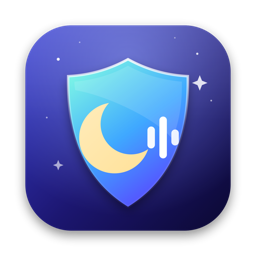
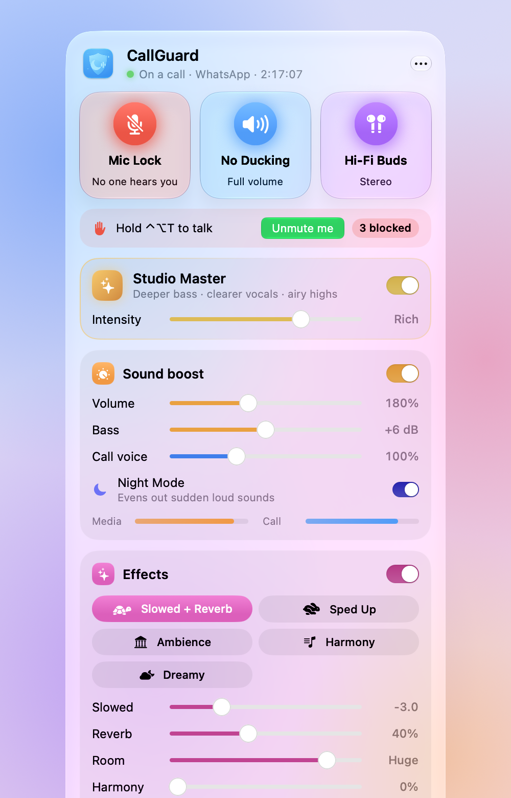

CallGuard
The all-night call companion for Mac. A free, open-source menu bar app that stops your Mac lowering music during calls, locks your mic so an earbud tap can't unmute you, keeps Bluetooth earbuds out of muffled call mode, and adds Studio Master bass, 8D audio and slowed + reverb to any app.
Download for Mac (free)View on GitHubVersion 3.3 · macOS 14.4 or later · Apple silicon and Intel · MIT license · updated 16 November 2026

What it fixes
No more call ducking
macOS drops YouTube and Spotify to a whisper during calls. CallGuard keeps them at full volume by moving the call to a muted decoy device and playing everything to your earbuds from before the drop.
Mic Lock
Hardware-level mute for every mic. An earbud tap or the app's own button can't unmute you, and anything that tries is reversed in milliseconds. Hold ⌃⌥T to talk.
Hi-Fi Buds
Stops Bluetooth earbuds dropping into 16 kHz mono "headset" mode on calls, so music stays in stereo.
Studio Master
Harmonic bass makes small earbuds sound deep. The bass is tightened and centred, vocals get presence and the highs get air.
8D Audio and effects
The music circles your head. Slowed + Reverb, Sped Up, Ambience, Harmony and Dreamy presets work on any app, live.
Made for falling asleep
A sleep timer fades the music but keeps the call voice. The mic locks itself when you go quiet. Night Mode tames sudden loud sounds.
Music and videos only: the other person's voice is never changed. No drivers, no analytics, nothing recorded. 0.0% CPU when idle.
Questions people ask
How do I stop my Mac lowering the volume of music and videos during calls?
macOS turns other audio down ("ducks" it) whenever a call app runs its voice processing, and there is no setting to switch it off. CallGuard's No Ducking fixes it: during a call it points the call app at the Mac's speakers, muted in hardware, and plays everything to your earbuds from a copy taken before the volume drop.
Why does my music sound muffled on calls with Bluetooth earbuds or AirPods on a Mac?
When a call app uses the earbuds' microphone, Bluetooth switches them into headset mode, which is 16 kHz mono and sounds like an old phone line. CallGuard's Hi-Fi Buds makes calls use the Mac's built-in mic instead, so the earbuds stay in stereo (44.1–48 kHz) high quality.
How do I stop my earbuds or AirPods unmuting me on a WhatsApp call?
Tapping an earbud can toggle the call app's mute button, for example while you sleep. CallGuard's Mic Lock mutes every microphone at the hardware level, so apps receive digital silence whatever their own button says. It re-mutes within milliseconds if anything unmutes it. Click the red LOCKED icon to talk again.
Can a Mac app block the microphone for just one app?
No. macOS doesn't let one app block another app's microphone without resetting privacy permissions. Mic Lock mutes the microphones themselves, so while it's on no app can hear you. Push-to-talk (hold ⌃⌥T) and the one-click unmute let you speak when you need to.
How do I get 8D audio on a Mac for any song?
Turn on CallGuard's 8D Audio and wear earphones. It makes any app's sound, such as Spotify, YouTube or Apple Music, circle your head, using equal-power panning, a small delay between the ears and head-shadow filtering. A Speed slider sets one turn every 5–18 seconds.
How do I play Spotify or YouTube slowed + reverb on a Mac?
Choose the Slowed + Reverb preset in CallGuard's Effects. It lowers the pitch by 3 semitones and adds a large reverb to all system audio live. Live audio can't play slower without falling behind, so the timing stays in sync with the video while it sounds slowed.
Is there a free bass booster and volume booster for Mac?
Yes. CallGuard boosts all Mac audio up to 300% and bass up to +12 dB, with a limiter that holds peaks at −1 dBFS so it never clips. Studio Master adds harmonic bass, so small earbuds and laptop speakers can sound deep, plus clearer vocals and airy highs. It's free under the MIT license.
Which call apps work with No Ducking?
Verified with WhatsApp for Mac. It should work with any app that follows the system output device (FaceTime, Zoom, Teams, Google Meet in a browser, Discord, Telegram…), but these haven't been tested yet. If an app doesn't move, CallGuard falls back to extra gain automatically. Please report what you find.
Why does my Sound menu say "MacBook Speakers" during a call?
That's the decoy. The speakers are hardware-muted and your audio is on your earbuds. Volume keys still control the earbuds, and the output switches back on its own when the call ends.
Does No Ducking work on the Mac's own speakers?
No, because the speakers are the decoy. Use earbuds, headphones or another output. On the speakers, CallGuard uses the extra-gain fallback instead.
What happens if CallGuard crashes during a call?
The decoy speakers stay muted, so you get silence rather than a loud laptop in the night. Reopen CallGuard and it restores everything. Since 3.1 it also only uses the decoy after it has heard real audio, and a silence guard hands the call back to your earbuds if capture ever stops.
Does CallGuard record my audio or send data anywhere?
No. CallGuard has no network code and no analytics. Audio stays in memory for a few milliseconds while it is processed, then goes straight to your output. Nothing is recorded or saved.
Is there an iPhone or Windows version?
No iPhone version: iOS doesn't let apps mute other apps' mics or process other apps' sound. On Windows, most of this is built in. See WINDOWS.md, which includes one-click registry files to turn call ducking off.
How it works
CallGuard uses Apple's public Core Audio process taps (macOS 14.2+) and a private aggregate device, so it needs no virtual audio driver. Full technical write-up and measurements: How CallGuard works. On Windows? See the Windows guide.